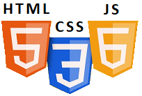

É uma linguagem de script para WEB, criada pela Netscape (Brendan Eich) em 1994/1995. Trata-se de uma linguagem de front-end, usada por bilhões de páginas. A linguagem JavaScript tem por objetivo adicionar funcionalidades às páginas HTML, ela é usada dentro das páginas HTML.
A linguagem JavaScript foi criada por Brendan Eich, um desenvolvedor da Netscape, em 1995. Nos primórdios de sua criação a linguagem teve o nome de Mocha, LiveScript e finalmente foi batizada como JavaScript, o nome foi uma cartada de marketing em função da popularidade da linguagem JAVA. A linguagem JavaScript teve um desenvolvimento rápido, foi introduzida no Netscape Navigator 2.0 (1995) para tornar os sites mais dinâmicos e interativos, permitindo aos desenvolvedores criar scripts executados diretamente no navegador.
No início a linguagem JavaScript era focado em tarefas simples, como validação de formulários e interação básica com o DOM (Document Object Model), em 1996, a Microsoft introduziu sua própria versão da linguagem, chamada JScript, para competir com a Netscape. Isso gerou problemas de compatibilidade entre navegadores (Guerra dos Navegadores). Em função desse conflito a Netscape enviou o JavaScript ao ECMA International, resultando na criação da especificação ECMAScript (ES) em 1997.
O ECMAScript é o nome do padrão oficial que define como a linguagem JavaScript deve funcionar. Ele é mantido pela ECMA International, uma organização responsável por padronizar tecnologias de informação e comunicação. O ECMAScript fornece as especificações técnicas que os navegadores e outras implementações seguem para garantir consistência e interoperabilidade no uso do JavaScript. O ECMAScript é o coração técnico do JavaScript, responsável por definir como ele deve funcionar. Graças a ele, a linguagem continua evoluindo e se adaptando às necessidades do desenvolvimento moderno, mantendo sua relevância no mundo da tecnologia.
ECMAScript é o padrão que define como o JavaScript deve ser implementado. Entre 1998 e 2005 houve uma estagnação, a linguagem ficou estagnada, enquanto navegadores como Internet Explorer e Netscape dominavam o mercado. As limitações técnicas e a falta de suporte consistente entre navegadores reduziram o entusiasmo inicial. Nessa mesma época o Ajax e Web 2.0 ganham força, Ajax (Asynchronous JavaScript and XML) revolucionou o uso da web, permitindo a criação de aplicações dinâmicas que carregavam dados sem recarregar a página. Ferramentas como o jQuery surgiram para simplificar o uso do JavaScript e resolver problemas de compatibilidade entre navegadores. JavaScript ganhou popularidade com o surgimento de frameworks e bibliotecas avançadas, como Node.js (2009): Tornou possível usar JavaScript no lado do servidor, AngularJS, React e Vue.js: Tornaram o desenvolvimento de interfaces mais estruturado e eficiente. O lançamento de ECMAScript 6 (ES6) em 2015 trouxe grandes melhorias na linguagem.